Actual Studio Play captures at matching normal eye-height camera poses and the same map seed. Warm colors, textures and lighting grade are preserved. Click a screenshot to open the original capture.
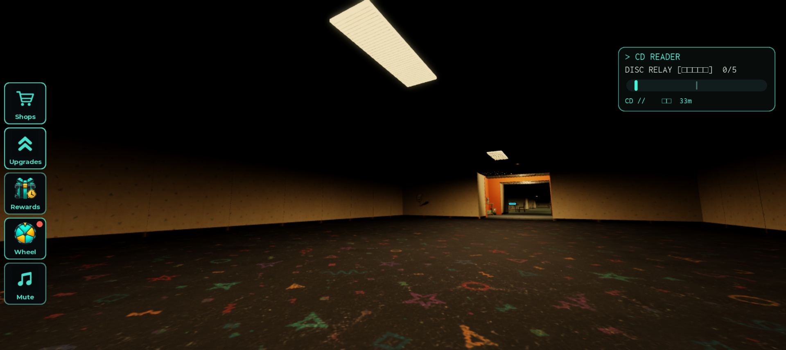
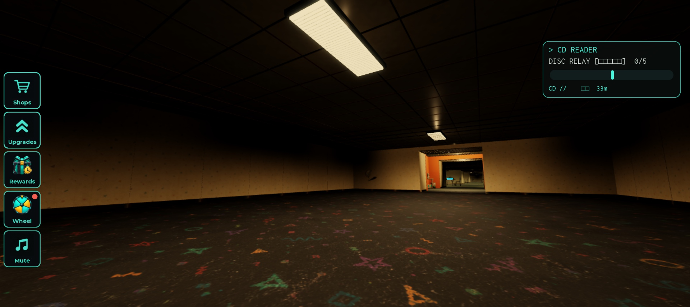
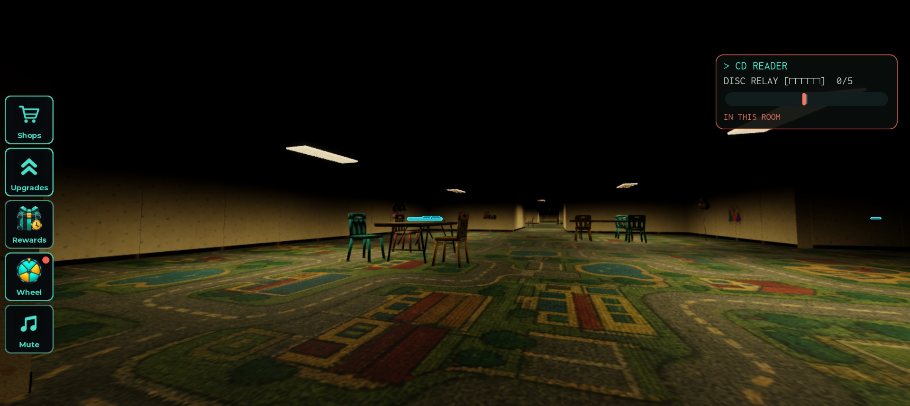
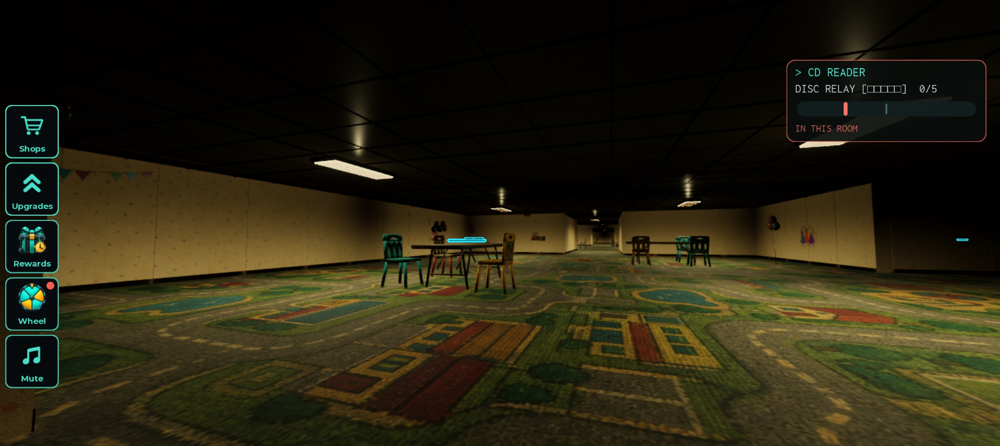
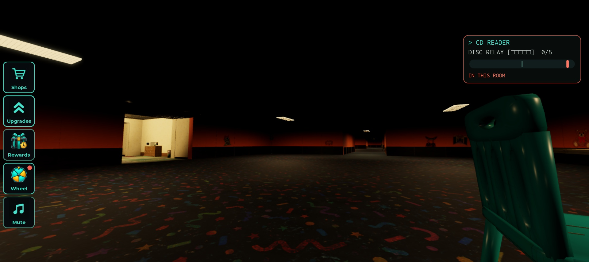
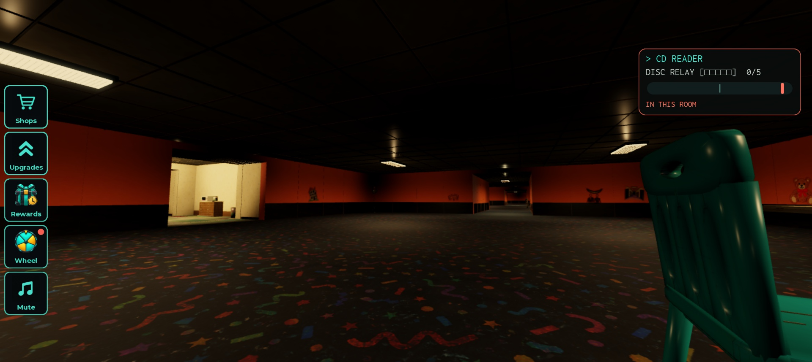
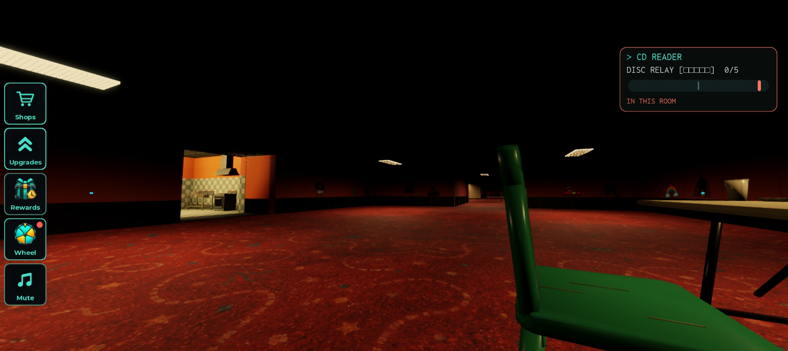
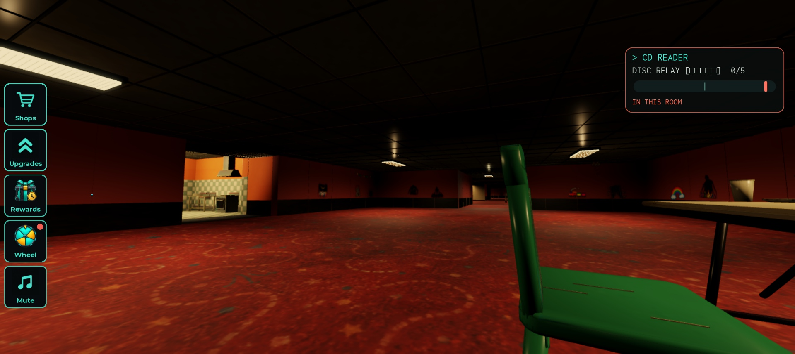
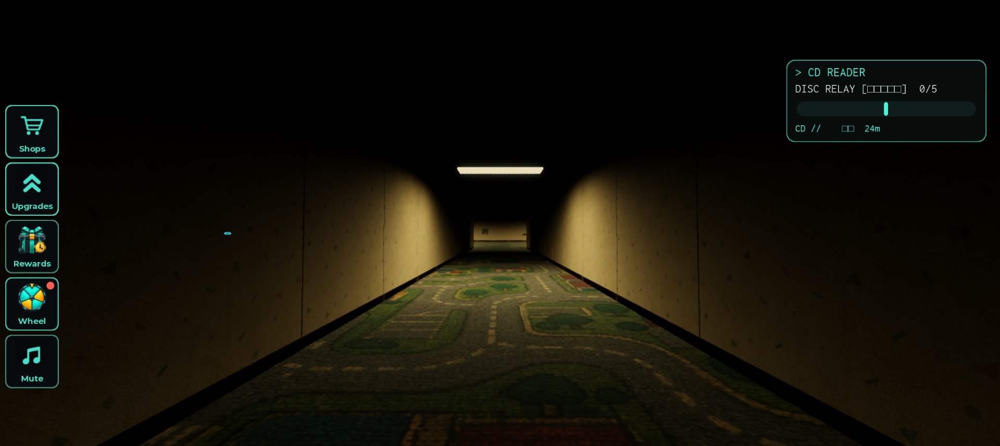
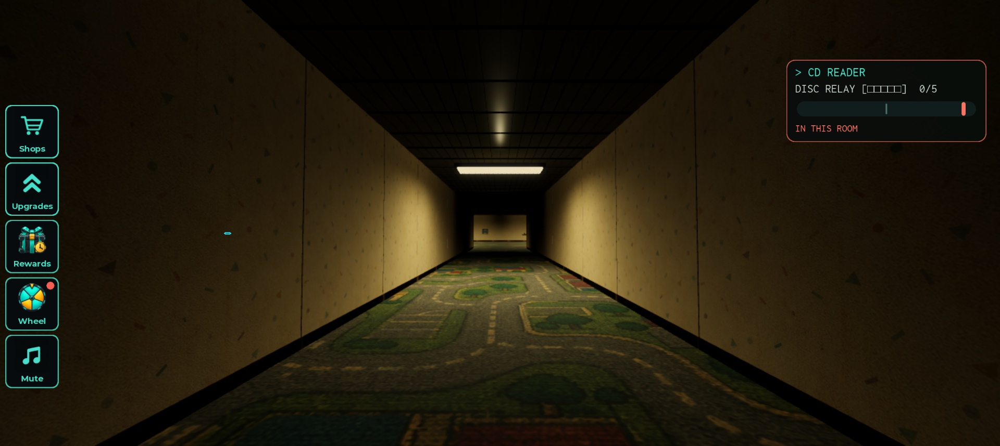
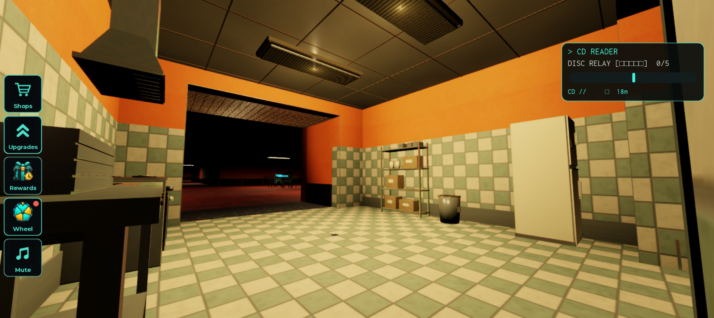
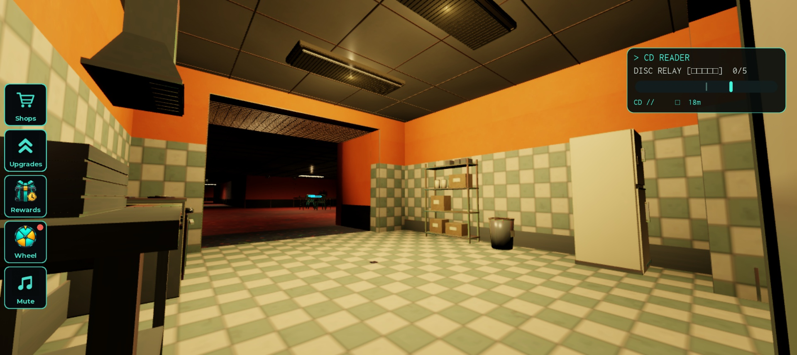